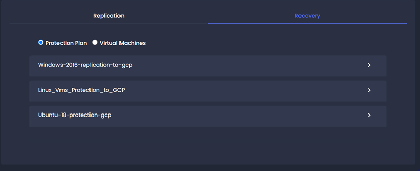
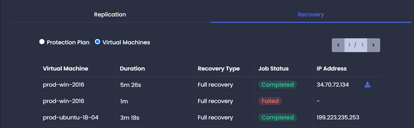

Recovery Job
The Recovery jobs tab provides details about all the running, completed and failed recovery operations.
Protection Plan
Navigation: Home -> Jobs -> Select Protection Plan. Protection plan recovery details provide a list of protection plans. Each protection plan has its associated recovered (Full / Test) or migrated virtual machine information.
click on > icon to view protection plan level details.

| Name | Name of virtual machine associated with the protection plan. |
| Duration | The time required to complete the recovery. |
| Recovery Type | Recovery Type (Full Recovery, Test Recovery or Migration) |
| Status | Recovery/Migration status. |
Virtual Machines
Navigation: Home -> Jobs -> Select Virtual Machines.Provides a list of recovered (Test/Full) or migrated virtual machines.

| Virtual Machine | Name of the protected virtual machine. |
| Duration | The time required to complete the recovery/migration. |
| Recovery Type | Recovery Type (Full Recovery, Test Recovery or Migration) |
| Job Status |
Recovery job status. 1. Completed: Recovery completed successfully. 2. Started: Recovery job is running. 3. Partially Completed: Recovery completed with errors. 4. Failed: Recovery failed. |
| IP Address | Recovered virtual machine IP address. |